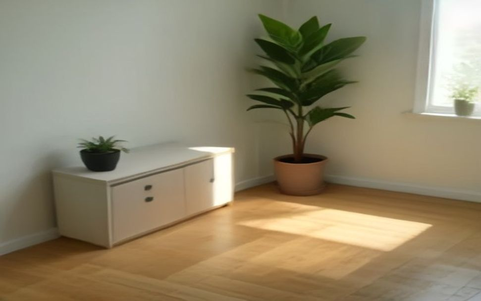
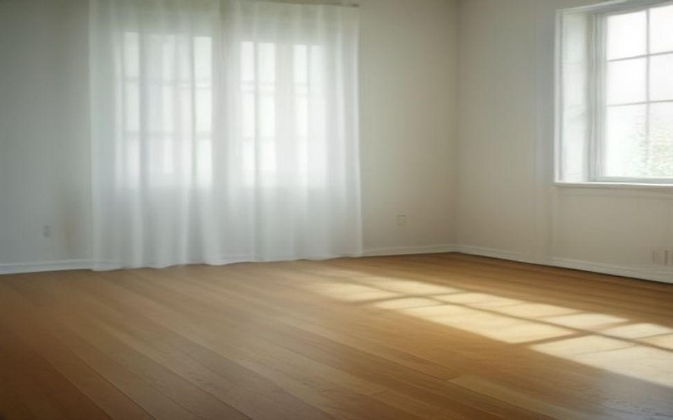

愛知県春日井市の、親子のリトミック教室
はじめての「音」を、いっしょに。
鈴を鳴らす。とことこ歩く。ぴたっと止まる。0歳から年長さんまでの、はじめての音楽の場所です。上手にできなくても大丈夫。その日の「たのしかった」を、いちばん大切にしています。
きらきら星。はじめのレッスンで歌う曲です


※写真はイメージです。Ramiリトミック教室様の実際のお写真ではありません。ご依頼をいただいた際に、教室のお写真へ差し替えます。
ちいさな子のための、3つのやくそく
はじめて楽器にさわる日から、安心して通っていただけるように。
泣いても、歩いても大丈夫
じっと座っていられなくて当たり前の年齢です。走り回っても、途中で泣いても、そのまま受けとめます。お母さんが謝る必要はありません。
楽器はぜんぶ用意します
鈴、タンバリン、カスタネット、ボール。小さな手でも持てるものをそろえています。ご家庭で買っていただくものはありません。
季節の歌と、手あそび
春はちょうちょ、夏は水あそびの歌。おうちでも歌えるように、その月の歌をおたよりでお渡ししています。
0歳から、年長さんまで
月齢や年齢で、クラスをわけています。同じくらいのお子さまと一緒に過ごせます。
鍵盤を押すと、ドレミファソの音が鳴ります。
レッスンの日は、こんなふうに
45分間の流れです。はじめての日も、この順番で進みます。
- 1
ごあいさつの歌
まずは名前を呼んで、お返事から。泣いていても、抱っこのままで大丈夫です。
- 2
からだを動かす
音に合わせて歩く、走る、止まる。ピアノの音が変わったら、動きも変わります。
- 3
楽器であそぶ
鈴やタンバリンを鳴らします。音の大きい・小さいを、耳と手で覚えていきます。
- 4
さようならの歌
最後はゆっくり座って、今日の歌をもう一度。おうちで歌える曲を持って帰ります。
はじめての方から、よくいただくご質問
ご不安なところは、遠慮なく聞いてください。
うちの子、じっとしていられません。だいじょうぶでしょうか
だいじょうぶです。この年齢のお子さまは、じっと座っていられなくて当たり前です。走り回っても、部屋のすみで見ているだけでも、それがその日のその子のペースです。
途中の月から入ることはできますか
できます。毎月の歌や活動は月ごとに変わりますので、いつ入られても「途中から」にはなりません。はじめての方には、最初の数回はそばでご説明しながら進めます。
下の子（赤ちゃん）を連れていっても大丈夫ですか
どうぞご一緒にお越しください。抱っこひものままご参加いただけます。授乳やおむつ替えの場所も、お声がけいただければご案内します。
まず見学だけしたいのですが
もちろん大丈夫です。お子さまがその日の気分で参加されなくても構いません。教室の雰囲気を見ていただくだけでも、遠慮なくお越しください。
せんせいのこと
※ここには先生のご紹介文が入ります。ご経歴、リトミックを始められたきっかけ、お子さまと接するときに大切にされていること。このあたりを3〜5行いただければ、こちらで整えます。
お月謝
- 体験レッスン1,000円1回かぎり。ご入会前にお試しいただけます。
- 月3回コース5,000円／月いちばん多くの方が選ばれているコースです。
- きょうだい割−500円／月2人目からお月謝が割引になります。
※金額は仮のものです。実際の料金に差し替えます。
教室のこと
| 教室名 | Ramiリトミック教室 |
|---|---|
| ばしょ | （会場名・住所が入ります） |
| ひにち | （曜日と時間が入ります） |
| たいしょう | 0歳〜年長（未就学児） |
| もちもの | 動きやすい服装と、水分だけお持ちください |
まずは一度、遊びにきてください
見学だけでも大丈夫です。お子さまの機嫌が悪い日は、日をあらためても構いません。
体験レッスンを申し込む※このボタンは見本です。実際のページでは、そのままお申し込みいただけます。